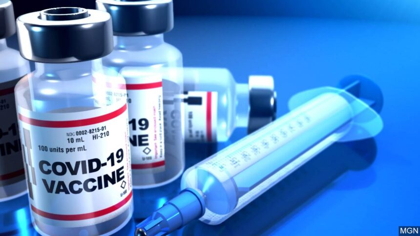
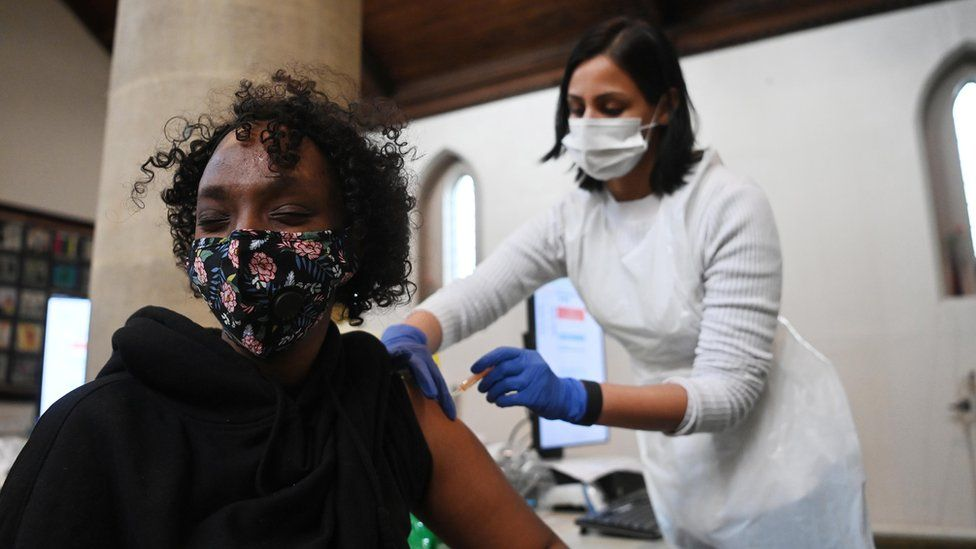
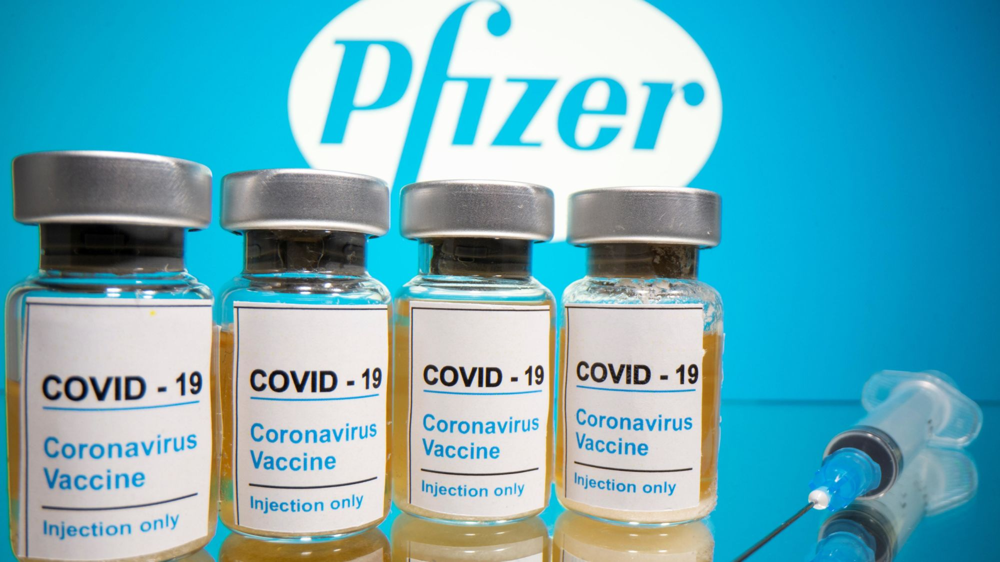
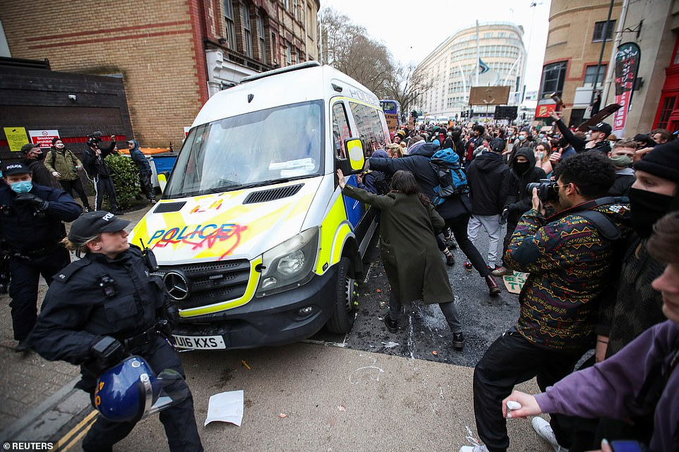
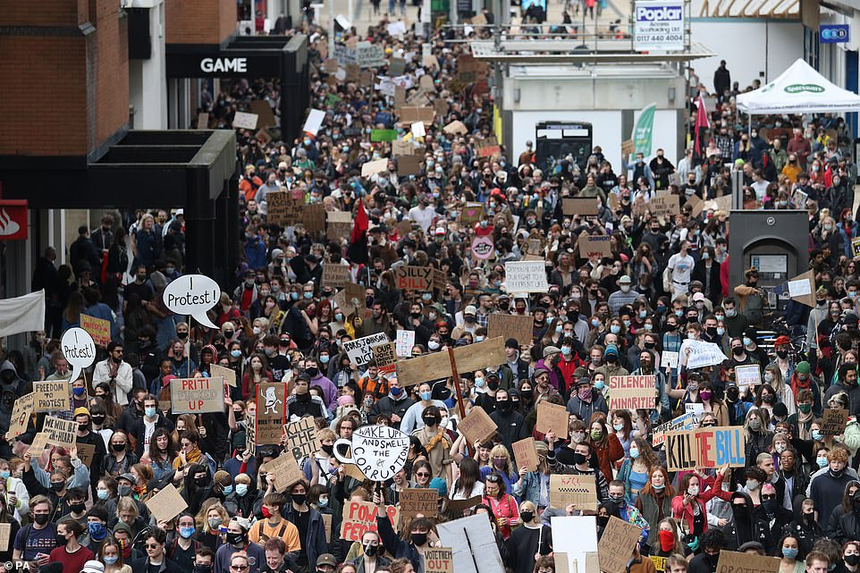
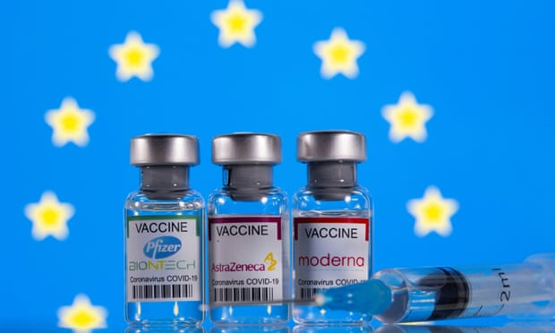
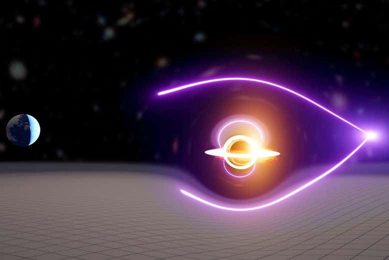

Covid-19: Record-breaking day with 844,285 vaccine doses given in UK
  The number of daily Covid-19 vaccine doses administered in the UK has hit a record high for a third consecutive day. A total of 844,285 combined first and second doses were given on Saturday, up from 711,157 on Friday. More than 27.6 million people in the UK - more than half the adult population - have now received at least one dose of a vaccine. (Read More...)
Hundreds chanting 'Kill the Bill protest in Bristol over controversial Police and Crime bill'
 Clashes as hundreds of 'Kill the Bill' activists march on Bristol over plans to give police more powers to tackle non-violent protests... while officers in Newcastle pin woman to ground at demo in wake of Sarah Everard.
(Read More...)
EU export ban would delay UK Covid vaccine drive by two months
Britain’s Covid vaccine programme faces a two-month delay in the event of an EU export ban, derailing the government’s plans to reopen the economy this summer, an analysis for the Guardian reveals. A ban, due to be debated by leaders of the 27 EU member states on Thursday, would badly stall the UK vaccination effort, and would be likely to force the government to extend restrictions on people’s lives. (Read More...)
Microsoft Exchange Server attacks: 'They're being hacked faster than we can count', says security company

A 'significant' number of cyber attacks targeting vulnerable Microsoft Exchange servers are attempted every single day, warn researchers at F-Secure - who say it's critical to apply the patches immediately. There are still thousands of cyber attacks targeting zero-day security vulnerabilities in Microsoft Exchange Server every single day as cyber criminals attempt to target organisations which have yet to apply the security patches released to mitigate them, according to a tech security company. (Read More...)
Blasts of intergalactic radiation hint at elusive mid-sized black hole
Powerful blasts of radiation from distant galaxies have revealed signs of an elusive medium-sized black hole, which may be a link between the small black holes that we have observed and the supermassive black holes that sit at the centres of galaxies. These medium-sized objects are notoriously hard to find because they don’t shine brightly like supermassive black holes and are too big for current gravitational-wave detectors to spot. (Read More...)
...
...